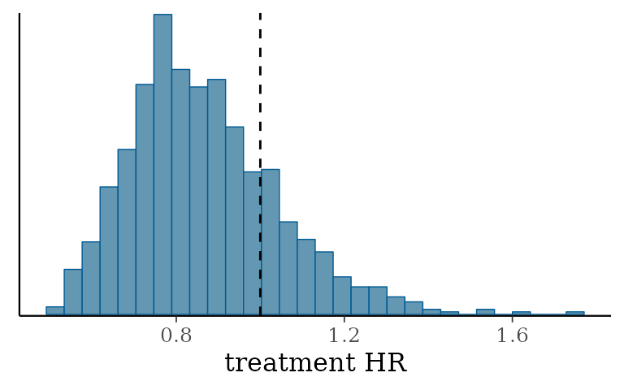
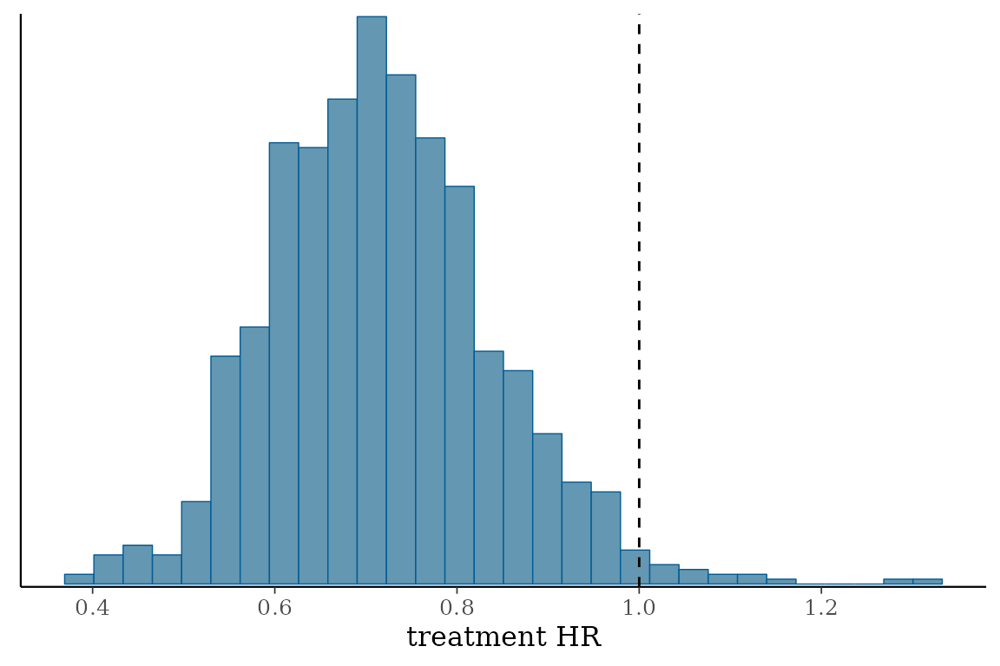

6. Walkthrough overview slides
Matt Secrest
overview_slides.RmdIntroducing psborrow2
Presentation flow
- Bayesian Dynamic Borrowing
- History of
psborrow2 - Overview of package
- Demonstration of a single dataset analysis
- Demonstration of a simulation study analysis
- Installing
psborrow2
Acknowledgements
psborrow2 is the culmination of work from many
individuals within industry, academia, and the FDA. The below list of
authors and collaborators has been integral to the package development
(alphabetical):
- Craig Gower-Page
- Isaac Gravestock
- Yichen Lu
- Herb Pang
- Daniel Sabanes Bove
- Matthew Secrest
- Jiawen Zhu
Bayesian Dynamic Borrowing
Hybrid controls
Hybrid control studies are those in which external data are used to supplement the control arm of a randomized, controlled trial (RCT). The schematic below describes such a scenario:
Types of borrowing
How best should we incorporate the knowledge we have on the external control arm?
There are several ways to do this. psborrow2 allows for
three ways of incorporating external data:
| Borrowing type | Description |
|---|---|
| No borrowing | Only include the internal RCT date (i.e., ignoring external controls) |
| Full borrowing | Pool external and internal controls |
| Bayesian dynamic borrowing (BDB) | Borrowing external controls to the extent that the outcomes are similar |
Standard Bayesian analysis without borrowing
Consider a standard Bayesian model with survival as an endpoint without external data. This is equally valid in “No borrowing” and “Full borrowing” approaches. There are two parameters of interest:
- \(\rho_{00}\), the hazard rate for the internal control
- \(\rho_{10}\), the hazard rate for the internal experimental
The hazard ratio, \(\theta\), is therefore: \[ \theta = \frac{\rho_{10}}{\rho_{00}} \]
And the posterior distribution of \(\theta\) is:
\[ P(\theta | X) \propto P(X | \theta) \times P(\theta) \]
Bayesian Dynamic Borrowing
In BDB, we introduce two more parameters:
- \(\rho_{01}\), the hazard rate of the external control cohort
- \(\tau\), a precision parameter known as the “commensurability parameter”
Information from \(\rho_{01}\) is used in estimating \(\rho_{00}\) through a hierarchical model:
\[ \rho_{00} | \rho_{01} \sim \operatorname{Normal}\left(\rho_{01}, \frac{1}{\tau}\right) \]
The posterior distribution for \(\theta\) is then:
\[ P(\theta, \tau | X) \propto P(X | \theta, \tau) \times P(\theta | \tau) \times P(\tau) \]
Impact of \(\tau\)
The commensurability parameter, \(\tau\) dictates the extent of borrowing. This is estimated by the model but can be influenced by the choice of hyperprior. As \(\tau\) approaches infinity, the prior distribution on \(\rho_{00}\) effectively becomes \(\rho_{01}\):
\[ \rho_{00} \sim \rho_{01} \approxeq \operatorname{Normal}\left(\rho_{01}, \infty\right) \]
History of psborrow2
psborrow2 timeline
psborrow2 is the successor to psborrow,
an R package for simulation studies to aid trial design and understand
the benefits of BDB on operating characteristics.
| Date | Event |
|---|---|
| 2019 | psborrow development started |
| Q2 2021 | CRAN v0.1.0 published |
| 2021 | Initial user feedback received from the interial POC study and the FDA CID pilot project |
| Q1 2022 | We start a collaboration with Roche statistical engineering team to productionize the package |
| May 2022 | psborrow v0.2.0 published (bug fixed, documentation improved) on CRAN |
| Jul 2022 | psborrow2 development started (faster, improved UI, tests, flexibility, more outcomes) |
| Oct 2022 | psborrow2 package made public |
Overview of package
Demonstration of a single BDB analysis
Prior distributions
In psborrow2, the user creates fully parametric Bayesian
models with proper prior distributions using the constructors:
bernoulli_prior()
beta_prior()
cauchy_prior()
exponential_prior()
gamma_prior()
normal_prior()
poisson_prior()
uniform_prior()is(normal_prior(mu = 0, sigma = 100), "Prior")
> [1] TRUEPlotting priors
Each Prior object has a plot method.
plot(
normal_prior(mu = 0, sigma = 10),
xlim = c(-100, 100),
ylim = c(0, 0.1)
)Plotting an uninformative normal prior
plot(
normal_prior(mu = 0, sigma = 10000),
xlim = c(-100, 100),
ylim = c(0, 0.1)
)Hyperpriors for commensurability parameters
Let’s look at a conservative hyperprior that will not encourage borrowing:
plot(
gamma_prior(alpha = 0.001, beta = 0.001),
xlim = c(-1, 20),
ylim = c(0, .025)
)Now let’s look at a more aggressive hyperprior that may induce borrowing:
plot(
gamma_prior(alpha = 1, beta = 0.001),
xlim = c(-1, 20),
ylim = c(0, .025)
)Example data
psborrow2 has simulated example data we can use in an
analysis.
head(example_matrix[, c("ext", "trt", "time", "cnsr")])
> ext trt time cnsr
> [1,] 0 0 2.4226411 0
> [2,] 0 0 50.0000000 1
> [3,] 0 0 0.9674372 0
> [4,] 0 0 14.5774738 0
> [5,] 0 0 50.0000000 1
> [6,] 0 0 50.0000000 1-
ext = 1for external trial patients, elseext = 0 -
trt = 1for experimentally-treated patients, elsetrt = 0 -
timeis the time to event or censorship -
cnsr = 1if a patient’s follow-up was censored, elsecsnr = 0
The flags in this data.frame are explained in greater
detail in ?example_matrix.
| External trial data flag | Total | ||
|---|---|---|---|
| 0 | 1 | ||
| Experimental treatment flag | |||
| 0 | 50 | 350 | 400 |
| 1 | 100 | 0 | 100 |
| Total | 150 | 350 | 500 |
It looks like we have 50 patients in our internal control, 100 in our internal experimental, and 350 in our external control.
Naive internal comparisons
Let’s start by exploring the three arms descriptively:
Wow, the external control population looks quite different from the
internal control population!
As a point of reference, let’s conduct a Cox proportional hazards model looking just at the internal RCT data.
| term | estimate | std.error | statistic | p.value | conf.low | conf.high |
|---|---|---|---|---|---|---|
| trt | 0.90 | 0.20 | −0.56 | 0.58 | 0.61 | 1.32 |
Here, the hazard ratio is 0.90 (95% CI 0.61 - 1.32), ignoring the external control data.
Hybrid control analysis
Let’s confirm that BDB will not perform much borrowing when we
include the external data. For a BDB analysis in psborrow2,
we want to create an object of class Analysis with:
create_analysis_obj(
data_matrix,
outcome,
borrowing,
treatment
)| Argument | Description |
|---|---|
| data_matrix | The data matrix, including all relevant outcome variables,and treatment arm and external control arm flags. |
| outcome | Object of class Outcome as output by exp_surv_dist(), weib_ph_surv_dist(), or logistic_bin_outcome(). |
| borrowing | Object of class Borrowing as output by borrowing_details(). |
| treatment | Object of class Treatment as output by treatment_details(). |
Outcome class
Let’s look at the Outcome class. There are three
different outcomes supported by psborrow2, each of which
has a constructor:
| Constructor | Description |
|---|---|
| exp_surv_dist() | Exponential survival distribution |
| weib_ph_surv_dist() | Weibull survival distribution (proportional hazards formulation) |
| logistic_bin_outcome() | Bernoulli distribution with logit parametrization |
Arguments to exp_surv_dist()
exp_surv_dist(
time_var,
cens_var,
baseline_prior
)The first two arguments to exp_surv_dist() are
straightforward:
-
time_var, Name of time variable column in model matrix -
cens_var, Name of the censorship variable flag in model matrix
The final argument is more complicated:
-
baseline_prior, Prior distribution for the log hazard rate of the external control arm.
Let’s create our outcome object with exp_surv_dist()
using an uninformative Normal prior distribution for the log hazard rate
of the external control arm.
exp_outcome <- exp_surv_dist(
time_var = "time",
cens_var = "cnsr",
baseline_prior = normal_prior(0, 10000)
)class(exp_outcome)
> [1] "ExponentialSurvDist"
> attr(,"package")
> [1] "psborrow2"is(exp_outcome, "Outcome")
> [1] TRUEBorrowing class
Borrowing class objects are created with
borrowing_details().
borrowing_details(
method,
ext_flag_col,
tau_prior
)-
method, The type of borrowing to perform. It must be one of:'BDB','Full borrowing', or'No borrowing' -
ext_flag_col, The name of the column in the data matrix that corresponds to the external control flag -
tau_prior, the hyperprior for the commensurability parameter (only necessary for ‘BDB’)
Let’s create a Borrowing object with a conservative
inverse Gamma distribution with rate and scale of 0.001:
bdb_borrowing <- borrowing_details(
method = "BDB",
ext_flag_col = "ext",
tau_prior = gamma_prior(alpha = 0.001, beta = 0.001)
)class(bdb_borrowing)
> [1] "Borrowing"
> attr(,"package")
> [1] "psborrow2"Treatment class
Finally, we’ll create an object of class Treatment
through the constructor treatment_details.
treatment_details(
trt_flag_col,
trt_prior
)-
trt_flag_col, The name of the column in the model matrix that corresponds to the treatment flag -
trt_prior, Object of classPriorspecifying the prior distribution of the log hazard ratio for the experimental treatment
Let’s assume an uninformative prior distribution for the log hazard
ratio of treatment and create our Treatment object:
trt_details <- treatment_details(
trt_flag_col = "trt",
trt_prior = normal_prior(0, 10000)
)class(trt_details)
> [1] "Treatment"
> attr(,"package")
> [1] "psborrow2"Analysis class object
Now we have all the information we need to create an object of class
Analysis:
analysis_object <- create_analysis_obj(
data_matrix = example_matrix,
outcome = exp_outcome,
borrowing = bdb_borrowing,
treatment = trt_details
)class(analysis_object)
> [1] "Analysis"
> attr(,"package")
> [1] "psborrow2"We can do this in one function call as well:
analysis_object <- create_analysis_obj(
data_matrix = example_matrix,
outcome = exp_surv_dist(
time_var = "time",
cens_var = "cnsr",
baseline_prior = normal_prior(0, 10000)
),
borrowing = borrowing_details(
method = "BDB",
ext_flag_col = "ext",
tau_prior = gamma_prior(alpha = 0.001, beta = 0.001)
),
treatment = treatment_details(
trt_flag_col = "trt",
trt_prior = normal_prior(0, 10000)
)
)print(analysis_object)
> Analysis Object
>
> Outcome model: ExponentialSurvDist
> Outcome variables: time cnsr
>
> Borrowing method: BDB
> External flag: ext
>
> Treatment variable: trt
>
> Data: Matrix with 500 observations
> - 50 internal controls
> - 350 external controls
> - 100 internal experimental
>
> Stan model compiled and ready to sample.
> Call mcmc_sample() next.Sampling from an analysis object
The Analysis object suggests calling
mcmc_sample() as a next step. We’ll follow that advice!
results <- mcmc_sample(
analysis_object,
iter_warmup = 1000,
iter_sampling = 1000,
chains = 1
)results
> variable mean median sd mad q5 q95 rhat ess_bulk ess_tail
> lp__ -1617.88 -1617.49 1.58 1.21 -1620.81 -1616.14 1.00 316 359
> beta_trt -0.17 -0.17 0.19 0.19 -0.47 0.16 1.00 458 592
> tau 1.29 0.54 1.92 0.73 0.00 5.22 1.00 287 219
> alpha[1] -3.35 -3.34 0.16 0.16 -3.61 -3.10 1.00 416 554
> alpha[2] -2.40 -2.40 0.06 0.06 -2.49 -2.31 1.00 763 712
> HR_trt 0.86 0.84 0.17 0.16 0.62 1.17 1.00 458 592At this point in our analysis, we should refer to the cmdstanr
site for methods.
Let’s look at a summary of the median and 95% credible intervals:
| variable | 2.5% | 50% | 97.5% |
|---|---|---|---|
| treatment log HR | −0.53 | −0.17 | 0.22 |
| commensurability parameter | 0.00 | 0.54 | 6.75 |
| baseline log hazard rate, internal | −3.66 | −3.34 | −3.04 |
| baseline log hazard rate, external | −2.51 | −2.40 | −2.29 |
| treatment HR | 0.59 | 0.84 | 1.24 |

Our results did not change substantially after using BDB. This is exactly what we would expect given how different our populations are!
Let’s explore baseline characteristics and see if we can identify ways in which the internal and external control arms differ:
Control |
Treatment |
Overall |
|||
|---|---|---|---|---|---|
| Internal (N=50) |
External (N=350) |
Internal (N=100) |
Internal (N=150) |
External (N=350) |
|
| cov1 | |||||
| Mean (SD) | 0.540 (0.503) | 0.740 (0.439) | 0.630 (0.485) | 0.600 (0.492) | 0.740 (0.439) |
| Median [Min, Max] | 1.00 [0, 1.00] | 1.00 [0, 1.00] | 1.00 [0, 1.00] | 1.00 [0, 1.00] | 1.00 [0, 1.00] |
| cov2 | |||||
| Mean (SD) | 0.200 (0.404) | 0.500 (0.501) | 0.370 (0.485) | 0.313 (0.465) | 0.500 (0.501) |
| Median [Min, Max] | 0 [0, 1.00] | 0.500 [0, 1.00] | 0 [0, 1.00] | 0 [0, 1.00] | 0.500 [0, 1.00] |
| cov3 | |||||
| Mean (SD) | 0.760 (0.431) | 0.403 (0.491) | 0.760 (0.429) | 0.760 (0.429) | 0.403 (0.491) |
| Median [Min, Max] | 1.00 [0, 1.00] | 0 [0, 1.00] | 1.00 [0, 1.00] | 1.00 [0, 1.00] | 0 [0, 1.00] |
| cov4 | |||||
| Mean (SD) | 0.420 (0.499) | 0.197 (0.398) | 0.460 (0.501) | 0.447 (0.499) | 0.197 (0.398) |
| Median [Min, Max] | 0 [0, 1.00] | 0 [0, 1.00] | 0 [0, 1.00] | 0 [0, 1.00] | 0 [0, 1.00] |
There appear to be some differences. Let’s use statistical adjustment base on the propensity score to address this:
ps_model <- glm(ext ~ cov1 + cov2 + cov3 + cov4,
data = example_dataframe,
family = binomial
)ps_model
>
> Call: glm(formula = ext ~ cov1 + cov2 + cov3 + cov4, family = binomial,
> data = example_dataframe)
>
> Coefficients:
> (Intercept) cov1 cov2 cov3 cov4
> 1.4389 0.5840 0.7643 -1.5827 -1.1420
>
> Degrees of Freedom: 499 Total (i.e. Null); 495 Residual
> Null Deviance: 610.9
> Residual Deviance: 508.1 AIC: 518.1We’ll make a new matrix called example_matrix_ps which
has 5 categories of propensity score levels with approximately the same
number of patients in each.
head(example_matrix_ps)
> time cnsr trt ext ps_cat_low ps_cat_low_med ps_cat_high_med ps_cat_high
> 1 2.4226411 0 0 0 1 0 0 0
> 2 50.0000000 1 0 0 0 0 0 0
> 3 0.9674372 0 0 0 0 0 0 1
> 4 14.5774738 0 0 0 0 0 0 0
> 5 50.0000000 1 0 0 0 0 0 0
> 6 50.0000000 1 0 0 0 0 0 0Adjusting for covariates in psborrow2
To adjust for covariates, we’ll use the costructor
add_covariates():
add_covariates(
covariates,
priors
)-
covariates, Names of columns in the data matrix containing covariates to be adjusted for -
priors, Either a single object of classPriorspecifying the prior distribution to apply to all covariates or a named list of distributions of classPrior, one for each covariate
Analysis object adjusting for propensity scores
Now let’s create an Analysis object that adjusts for
propensity scores:
analysis_object_ps <- create_analysis_obj(
data_matrix = example_matrix_ps,
covariates = add_covariates(
c("ps_cat_low", "ps_cat_low_med", "ps_cat_high_med", "ps_cat_high"),
normal_prior(0, 10000)
),
outcome = exp_surv_dist("time", "cnsr", normal_prior(0, 10000)),
borrowing = borrowing_details("BDB", "ext", gamma_prior(0.001, 0.001)),
treatment = treatment_details("trt", normal_prior(0, 10000))
)
results_ps <- mcmc_sample(analysis_object_ps,
iter_warmup = 1000,
iter_sampling = 1000,
chains = 1
)It looks like we do indeed see a treatment effect when differences in the distributions of baseline confounds are taken into consideration!
| variable | 2.5% | 50% | 97.5% |
|---|---|---|---|
| treatment log HR | −0.71 | −0.34 | −0.01 |
| commensurability parameter | 0.07 | 47.36 | 1,446.00 |
| baseline log hazard rate, internal | −4.58 | −4.19 | −3.79 |
| baseline log hazard rate, external | −4.60 | −4.20 | −3.82 |
| ps_cat_low | −0.31 | 0.25 | 0.83 |
| ps_cat_low_med | 0.66 | 1.07 | 1.52 |
| ps_cat_high_med | 1.66 | 2.10 | 2.54 |
| ps_cat_high | 2.57 | 2.95 | 3.37 |
| treatment HR | 0.49 | 0.71 | 0.99 |
The histogram of MCMC samples confirms this as well:

Demonstration of a simulation study
Simulation study
We now turn to the question of how to design trials with BDB in mind.
Here, we will create an object of class Simulation with
create_simulation_obj():
create_simulation_obj(
data_matrix_list,
outcome,
borrowing,
treatment
)If this looks similar to create_analysis_obj(), that is
by design!
sim_data_list()
The first argument we need to fill in is
data_matrix_list, created with
sim_data_list().
sim_data_list(
data_list,
guide,
effect,
drift,
index
)The first argument is a list of lists of matrices. At the highest level, we’ll index different data generation parameters. At the lowest level, we’ll index different matrices generated with these parameters.
data_list
This example data_list object is a list of lists with
two data generation scenarios (e.g., true HR of 1.0 and true HR of
0.8).

Suppose we have a list of lists of simulated data called
my_data_list:
There are four scenarios.
NROW(my_data_list)
> [1] 4Each scenario has 100 matrices.
NROW(my_data_list[[1]])
> [1] 100head(my_data_list[[1]][[1]], 3)
> id ext trt time status cnsr
> [1,] 1 0 0 8.179722 1 0
> [2,] 2 0 0 6.884286 1 0
> [3,] 3 0 0 2.348331 1 0Data generation guide
We also need to create a guide that explains how the
data were generated. In this example, the four scenarios are summarized
with the below guide:
my_sim_data_guide
> true_hr drift_hr id
> 1 0.6 No drift HR 1
> 2 1.0 No drift HR 2
> 3 0.6 Moderate drift HR 3
> 4 1.0 Moderate drift HR 4This guide implies that my_sim_data_guide[[1]] is a list
of matrices where the treatment HR was 0.6 and the drift HR was 1.0.
Finally, we need to specify where in the guide three
important features are: the true hazard ratio, the drift hazard ratio,
and the index. These are all the columns we have in our guide, so we
simply specify the column names:
my_sim_data_list <- sim_data_list(
data_list = my_data_list,
guide = my_sim_data_guide,
effect = "true_hr",
drift = "drift_hr",
index = "id"
)my_sim_data_list
> SimDataList object with 4 different scenarios
> true_hr drift_hr id n_datasets_per_param
> 1 0.6 No drift HR 1 100
> 2 1.0 No drift HR 2 100
> 3 0.6 Moderate drift HR 3 100
> 4 1.0 Moderate drift HR 4 100Borrowing list
For this simulation study, let’s focus on comparing four borrowing methods:
- No borrowing
- BDB, conservative hyperprior
- BDB, aggressive hyperprior
- Full borrowing
How do we specify that we want to evaluate multiple borrowing
methods? We’ll use a special list of Borrowing objects,
which we’ll create through the function
sim_borrowing_list().
sim_borrowing_list() needs a named list of
Borrowing objects:
my_borrowing_list <- sim_borrowing_list(
list(
"No borrowing" = borrowing_details("No borrowing", "ext"),
"Full borrowing" = borrowing_details("Full borrowing", "ext"),
"BDB - conservative" = borrowing_details("BDB", "ext", gamma_prior(0.001, 0.001)),
"BDB - aggressive" = borrowing_details("BDB", "ext", gamma_prior(1, 0.001))
)
)my_borrowing_list
> SimBorrowingList object with 4 different scenario(s)
> borrowing_scenario
> 1 No borrowing
> 2 Full borrowing
> 3 BDB - conservative
> 4 BDB - aggressiveNote, in this example we’ll only pass a list of
Borrowing objects, but similar constructors exist for other
psborrow2 objects:
Note: If you do not want to vary parameters in your
simulation study, you can simply pass an unlisted object. That is, you
could call borrowing_details() instead of
sim_borrowing_list().
create_simulation_obj()
Now, let’s create a Simulation object:
simulation_obj <- create_simulation_obj(
my_sim_data_list,
outcome = exp_surv_dist("time",
"cnsr",
baseline_prior = normal_prior(0, 10000)
),
borrowing = my_borrowing_list,
treatment = treatment_details(
trt_flag_col = "trt",
trt_prior = normal_prior(0, 10000)
)
)
mcmc_sample()
As with Analysis objects, the next step for us with
Simulation objects is to call
mcmc_sample():
simulation_res <- mcmc_sample(
simulation_obj,
iter_warmup = 1000,
iter_sampling = 1000,
chains = 1
)You’ll note the simulation study results are a special
psborrow2 class, NOT a CmdStanMCMC
object (as with Analysis objects).
simulation_res
> `MCMCSimulationResult` object. Call `get_results()` to save outputs as a data.frameLet’s get a useful data.frame of results by calling
get_results:
simulation_res_df <- get_results(simulation_res)Simulation study results
Let’s see what exactly is contained in the results.
colnames(simulation_res_df)
> [1] "true_hr" "drift_hr" "id"
> [4] "n_datasets_per_param" "outcome_scenario" "borrowing_scenario"
> [7] "covariate_scenario" "treatment_scenario" "mse_mean"
> [10] "bias_mean" "null_coverage" "true_coverage"-
mse_mean, the mean MSE for results -
bias_mean, the mean bias for the results -
null_coverage, the proportion of results that contain the null effect (1.0) in the specified credible interval quantiles (default are 0.025 - 0.975) -
true_coverage, the proportion of results that contain the true effect in the specified credible interval quantiles (default are 0.025 - 0.975)
Let’s look at the number of parameter combinations that were evaluated:
NROW(simulation_res_df)
> [1] 16head(simulation_res_df, 2)
> true_hr drift_hr id n_datasets_per_param outcome_scenario
> 1 0.6 No drift HR 1 100 default
> 2 1.0 No drift HR 2 100 default
> borrowing_scenario covariate_scenario treatment_scenario mse_mean
> 1 No borrowing No adjustment default 0.05834557
> 2 No borrowing No adjustment default 0.13082015
> bias_mean null_coverage true_coverage
> 1 0.05878194 0.51 0.97
> 2 0.03238762 0.94 0.94This makes sense as we had 4 scenarios in our data generation step and 4 in our borrowing step. The cartesian product is 16.
Installing psborrow2
psborrow2 can be installed from GitHub with:
devtools::install_git("https://github.com/Genentech/psborrow2")Feedback can be provided through GitHub issues:
https://github.com/Genentech/psborrow2/issues
The vignettes can be accessed with:
browseVignettes("psborrow2")